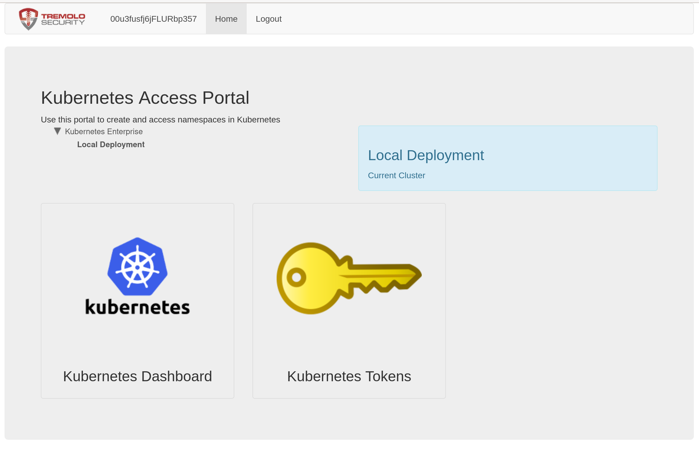
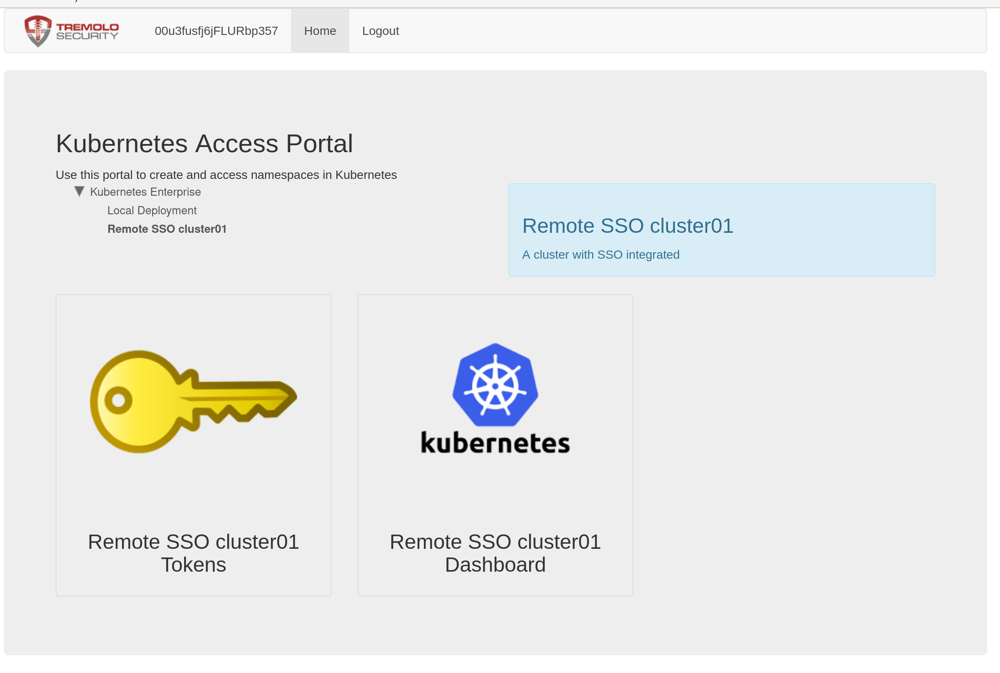

Multi Cluster SSO
OpenUnison can provide a central authentication point for all of your clusters, not just a single one. There are two options:
| Option | Advantages | Disadvantages |
|---|---|---|
| Have all clusters authenticate to a single OpenUnison | Only one trust needed with your identity provider, more control over your clusters | A "control plane" cluster becomes a single point of failure |
| Have each OpenUnison authenticate directly to an identity provider, but have the central openunison provide portal links | No single point of failure | Each cluster needs a trust with the identity provider |
Which direction you take will depend on your situation. If you have control over your identity provider, option 2 is often preferable to eliminate a single point of failure. If you don't have control over your identity provider, or your identity provider doesn't have an api for onboarding new trusts, option 1 can be a good choice.
In both scenarios the steps are similar:
- Configure your central orchestra portal
- Deploy orchestra to the cluster using the appropriate authentication mechanism
Centralized Authentication
The first step is to enable the tree on the front page of the portal to make it easier to navigate which cluster to access. In your control plane OpenUnison values.yaml,
add SHOW_PORTAL_ORGS: true to the openunison.non_secret_data :
Also, if you haven't updated the k8s_cluster_name option in your values.yaml, you should do that too to denote this is a control plane:
Next, update your helm deployment:
Once the openunison-orchestra pods have restarted, when you login your portal will look different:

You'll now see that there is a tree above the links, and that there's an option for "Local Deployment". Clicking here shows the familiar dashboard
and token links. You can customize the name of these labels by updateding your values.yaml openunison.non_secret_data section with K8S_DEPLOYMENT_NAME and K8S_DEPLOYMENT_DESC and re-running the ouctl command.
With your control plane ready to add new clusters, the next step is to onboard a new cluster. You'll need three things:
- An OpenUnison values.yaml with some specific configuration options
- The
admin.conf(or equivalent) for your satelite cluster - Being logged into your control plane and having that configuration merged with the administrative configuration for your satelite.
Your values.yaml file for your satelite will be automatically updated with an oidc section and a any certificates needed to interact with your control plane. Don't worry about having to determine configure these sections manually. Your k8s_cluster_name in the satelite's openunison values.yaml must be unique. Once you have these components, the ouctl command will:
- Create an identity provider for your new satelite in the control plane OpenUnison
- Deploy the satelite OpenUnison to the new satelite cluster, using the control plane OpenUnison as the identity provider
To deploy and integrate your satelite:
kubectl ctx kubernetes-admin@kubernetes
kubectl apply -f https://raw.githubusercontent.com/kubernetes/dashboard/v2.5.0/aio/deploy/recommended.yaml
ouctl install-satelite /path/to/satelite/openunison/values.yaml admin-user@openunison-control-plane kubernetes-admin@kubernetes
The above commands will first set your context to the remote satelite and install the dashboard. Next, it will run the ouctl with three parameters:
- The path to the values.yaml for the satelite instance of OpenUnison
- The
context.namein your kubectl configuration that points to your control plane cluster - The
context.namein your kubectl configuration that points to your satelite cluster
There's no secret because the ouctl utility will generate an oidc client secret for you automatically. The finaly step is to complete the integration of your satelite with your cluster if you're satelite will use OIDC for integration. If it's a managed cluster, you can skip this step.
Once completed, you can login to your control plane and you'll now see your new satelite having its own branch in the tree on the main page:

Assuming your user is authorized, you can now access the satelite cluster's dashboard and get a token for the satelite cluster. If using the oulogin kubectl plugin, use the host of the satelite's OpenUnison, not the host of the control plane.
Manual Configuration Steps
When deploying a centralized authentication scheme, you'll run the openunison-k8s-add-cluster helm chart on your constrol plane cluster to create a new identity provider. Next, you'll configure the managed cluster with it's own OpenUnison orchestra portal, but with your
control plane cluster's information instead of your central identity provider's information.
Choose a name for your cluster. The name should be unique in your control plane cluster and will be the name of the release
for installing the openunison-k8s-add-cluster helm chart. Next, add a key to your orchestra-secrets-source with a name that starts with
cluster-idp- and the name of your release and the client secret you want to use for your managed cluster. In the below example, our managed
cluster is going to be called cluster01:
kubectl patch secret orchestra-secrets-source --patch '{"data":{"cluster-idp-cluster01":"bXkgc2VjcmV0IGRhdGE="}}' -n openunison
Next, create a values.yaml file to onboard your new cluster. Use the below example as a template:
cluster:
name: cluster01
label: Remote SSO cluster01
description: A cluster with SSO integrated
sso:
enabled: true
inactivityTimeoutSeconds: 900
hosts:
portal: k8sou.apps.192-168-2-140.nip.io
dashboard: k8sdb.apps.192-168-2-140.nip.io
az_groups: []
You can list groups in az_groups in the same format as is used by RBAC for your authentication method. This will limit who can access
your cluster. Run the openunison-k8s-add-cluster helm chart:
helm install cluster01 tremolo/openunison-k8s-add-cluster -n openunison -f /path/to/cluster01-values.yaml
Once deployed, refresh your portal and you'll see a new option underneath Local Deployment :
With your control plane configured, the next step is to deploy OpenUnison to your managed cluster, following the instructions from
Deploying The Authentication Portal, specifically the OIDC section. Your oidc for your values.yaml
can be taken from a ConfigMap generated by the openunison-k8as-add-cluster chart named cluster-idp-RELEASE where RELEASE is the name of
the chart you deployed. In our example our release is named cluster01 so the configmap is named cluster-idp-cluster01:
This generates:
Name: sso-config-cluster01
Namespace: openunison
Labels: app.kubernetes.io/managed-by=Helm
Annotations: meta.helm.sh/release-name: cluster01
meta.helm.sh/release-namespace: openunison
Data
====
oidc-config:
----
oidc:
client_id: cluster-idp-cluster01
issuer: https://CONTROLPLANE_HOST/auth/idp/cluster-idp-cluster01
user_in_idtoken: true
domain: ""
scopes: openid email profile groups
claims:
sub: sub
email: email
given_name: given_name
family_name: family_name
display_name: name
groups: groups
Events: <none>
Replace CONTROLPLANE_HOST with the host name for your control plane's OpenUnison.
Finally, use the value you added to the orchestra-secrets-source Secret on your control plane cluster as your OIDC_CLIENT_SECRET for your new cluster.
Once OpenUnison is running on your new cluster, clicking on either badge will bring you to the dashboard or tokens page for your new cluster. When using the oulogin plugin use the host for your new cluster, not your control plane cluster.
Links Only
The first step is to enable the tree on the front page of the portal to make it easier to navigate which cluster to access. In your values.yaml,
add SHOW_PORTAL_ORGS: true to the openunison.non_secret_data :
And update your helm deployment:
helm upgrade orchestra tremolo/orchestra -n openunison -f /path/to/values.yaml
helm upgrade orchestra-login-portal tremolo/orchestra-login-portal -n openunison -f /path/to/values.yaml
Once the openunison-orchestra pods have restarted, when you login your portal will look different:
You'll now see that there is a tree above the links, and that there's an option for "Local Deployment". Clicking here shows the familiar dashboard
and token links. You can customize the name of these labels by updateding your values.yaml openunison.non_secret_data section with K8S_DEPLOYMENT_NAME and K8S_DEPLOYMENT_DESC and re-running the helm upgrades.
To add the links for your new cluster to your control plane cluster, you'll run the openunison-k8s-add-cluster helm chart on your constrol plane cluster to generate the "badges".
Choose a name for your cluster. The name should be unique in your control plane cluster and will be the name of the release
for installing the openunison-k8s-add-cluster helm chart.
Next, create a values.yaml file to onboard your new cluster. Use the below example as a template:
cluster:
name: cluster01
label: Remote SSO cluster01
description: A cluster with SSO integrated
sso:
enabled: false
inactivityTimeoutSeconds: 900
hosts:
portal: k8sou.apps.192-168-2-140.nip.io
dashboard: k8sdb.apps.192-168-2-140.nip.io
az_groups: []
You can list groups in az_groups in the same format as is used by RBAC for your authentication method. This will limit who can access
your cluster. Run the openunison-k8s-add-cluster helm chart:
helm install cluster01 tremolo/openunison-k8s-add-cluster -n openunison -f /path/to/cluster01-values.yaml
Once deployed, refresh your portal and you'll see a new option underneath Local Deployment :
Once OpenUnison is running on your new cluster, clicking on either badge will bring you to the dashboard or tokens page for your new cluster. When using the oulogin plugin use the host for your new cluster, not your control plane cluster.
Adding Satelite Clusters to Namespace as a Service
OpenUnison's Namespace as a Service portal also supports onboarding and management of multiple clusters with the same self-service for namespaces. There is no ServiceAccount token created or needed. The satelite cluster runs a specialized impersonation proxy that trusts the control plane cluster. The control plane OpenUnison generates a new, short lived JWT for each request. When the control plane rotates its signing key, the satelites pick it up automatically. This is similar to how GitHub Actions may interact with an AWS service without needing a static key. Onboarding a satelite cluster for NaaS requires a single kubectl configuration file that has cluster-admin access to both clusters. It also involves updating the satelite's values.yaml to add
openunison:
management_proxy:
enabled: true
external_admin_group: TremoloSecurity/Owners
host: k8smgmt.apps.212.2.245.93.nip.io
This is assuming you're using external groups in your control plane cluster. If not, you can skip external_admin_group. The openunison.management_proxy.host is what you want the host of your management proxy to be. It should point to your satelite cluster's load balancer.